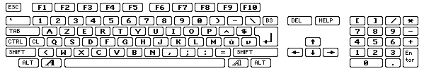

Οι κωδικοί πληκτρολογίου RAWKEY
Όλα τα πλήκτρα που χρησιμοποιούνται με το WHDLoad πρέπει να οριστούν ως κωδικοί 'raw key'.
Συνεπώς παρακάτω ακολουθεί ένας πίνακας που δείχνει όλα τα rawkeys σε δεκαεξαδική
μορφή:

για σύγκριση παρακάτω είναι το αμερικάνικο πληκτρολόγιο:

εδώ είναι το γαλλικό πληκτρολόγιο:

και εδώ το γερμανικό πληκτρολόγιο:

και εδώ το italianio πληκτρολόγιο:

Οι κωδικοί κουμπιών
Ξεκινώντας με την έκδοση 16.8 του WHDLoad είναι επίσης εφικτό να τερματιστεί το WHDLoad
χρησιμοποιώντας ένα κουμπί στο ποντίκι, joystick ή joypad. Για αυτό υπάρχουν μερικά ειδικά
rawkeys στον πίνακα που φαίνεται παρακάτω. Αυτά τα rawkeys λειτουργούν μόνο με την επιλογή
QuitKey και με καμία άλλη επιλογή πλήκτρου.
Για να επιτραπεί στο WHDLoad να καταλάβει το πάτημα κουμπιού πρέπει να χρησιμοποιηθεί
η επιλογή NoVBRMove, η CPU πρέπει να είναι τουλάχιστον
68010 και το εγκατεστημένο πρόγραμμα να έχει το vertical blank interrupt ενεργοποιημένο.
Τα rawkeys εμφανίζονται με δεκαεξαδική και δεκαδική μορφή.
Η χρήση κουμπιών από joypad ($103..$109/$113..$119) ως QuitKey θα κάνει αδύνατο για το εγκατεστημένο
πρόγραμμα να βρει/δοκιμάσει/χρησιμοποιήσει ένα joypad. Το εγκατεστημένο
πρόγραμμα θα νομίζει ότι υπάρχει joystick συνδεδεμένο. Αυτό γιατί μερικοί hardware περιορισμοί
καθορίζουν ότι το joypad μπορεί να ελεγχθεί μόνο μια φορά κάθε 1/50 του δευτερολέπτου. Οπότε
μην το χρησιμοποιείτε για παιχνίδια που απαιτούν joypad.
rawkey port 0
συνήθως ποντίκι |
rawkey port 1
συνήθως stick/pad |
Ποντίκι |
Joystick |
Joypad |
Megadrive |
Master System
TecnoPlus |
| $100/256 |
$110/272 |
αριστερό κουμπί |
fire |
Κόκκινο/Select |
B |
A |
| $101/257 |
$111/273 |
δεξί κουμπί |
δεύτερο fire |
Μπλε/Stop |
C |
B |
| $102/258 |
$112/274 |
μεσαίο κουμπί |
| $103/259 |
$113/275 |
|
|
Play |
| $104/260 |
$114/276 |
|
|
Πίσω/Αριστερό Κουμπί |
| $105/261 |
$115/277 |
|
|
Εμπρός/Δεξί Κουμπί |
| $106/262 |
$116/278 |
|
|
Πράσινο/Shuffle |
| $107/263 |
$117/279 |
|
|
Κίτρινο/Loop |
| $108/264 |
$118/280 |
|
|
Κόκκινο/Select |
| $109/265 |
$119/281 |
|
|
Μπλε/Stop |
Στις εκδόσεις 16.4 - 16.7 του WHDLoad ήταν δυνατό να χρησιμοποιηθεί ένα QuitKey $73
για την έξοδο πατώντας το αριστερό κουμπί του ποντικιού. Αυτό δεν λειτουργεί πλέον στο WHDLoad
από την έκδοση 16.8 και μετά. Αντί αυτού, πρέπει να χρησιμοποιηθεί ο κωδικός rawkey $100.